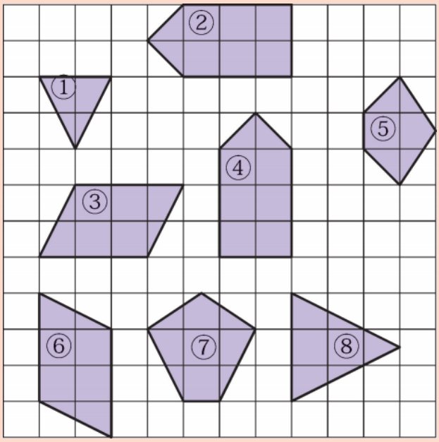
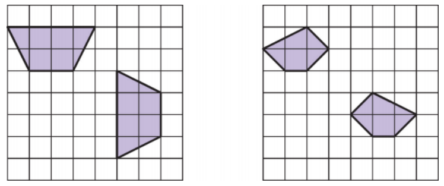
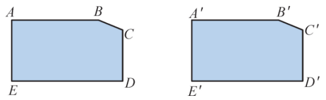
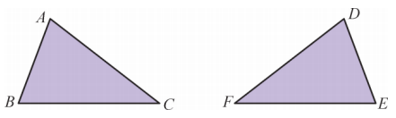
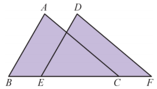
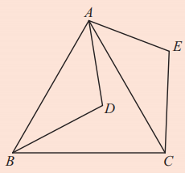
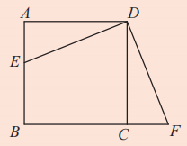
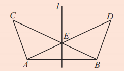
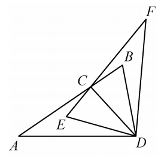

我们已经认识了图形的轴对称、平移与旋转，这是图形的三种基本变换，图形经过这样的变换，位置发生了改变，但变换前后两个图形的对应线段相等，对应角相等，图形的形状和大小并没有改变。
要想知道两个图形的形状和大小是否完全相同，可以通过轴对称、平移与旋转这些图形的变换，把两个图形叠合在一起，观察它们是否完全重合，能够完全重合的两个图形叫做全等图形 (congruent figures)。
轴对称、平移与旋转都是从实际生活中抽象得到的一些基本变换，它们保证了变换过程中，任意两点之间的距离不变，从而保证了图形的形状和大小都不发生变化，反映了图形之间的全等关系。
这种运用动态变换研究图形之间关系的方法，是一种重要而且有效的方法。
做一做
图9.5.1中给出了8个图形，你能发现哪两个图形是全等图形吗？动手试试看。

②和④、③和⑥。
观察图9.5.2中的两对多边形，每对中的其中一个图形可以经过怎样的变换和另一个图形重合？

左边一对可以通过平移重合；右边一对可以通过旋转（或轴对称）重合。


如图9.5.4 所示，△ABC ≌ △DEF, 且∠A = ∠D, ∠B = ∠E. 你能指出它们之间的对应顶点、对应边和其他的对应角吗?
对应顶点：A与D，B与E，C与F；对应边：AB与DE，BC与EF，AC与DF；对应角：∠A与∠D，∠B与∠E，∠C与∠F。
如图9.5.5, △ABC 沿着BC 的方向平移至 △DEF, ∠A = 80°, ∠B = 60°, 求∠F 的度数。

解：由图形平移的特征，可知△DEF 与△ABC 的形状和大小相同，即△DEF ≌△ABC，∴ ∠D = ∠A = 80°(全等三角形的对应角相等)。同理∠DEF = ∠B = 60°。又∵ ∠D + ∠DEF + ∠F = 180°(三角形的内角和等于180°)，∴ ∠F = 180° - ∠D - ∠DEF = 180° - 80° - 60° = 40°。
1. 在日常生活中，处处可以看到全等的图形。例如同一张底片印出的同样尺寸的照片、我们使用的数学教科书的封面、我们班的课桌面等。试尽可能多地举出生活中全等图形的例子，和同学比一比，看谁举出的例子多。
例如：同一批次生产的硬币、同一型号的手机、复印出来的文件、同款瓷砖、双胞胎的指纹等。
2. 如图，△ABD 绕着点A 逆时针旋转60°到△ACE 位置，则△ ≌ △ ，这两个三角形的对应点是 与 ， 与 ， 与 ；对应边是 与 ， 与 ， 与 ；对应角是 与 ， 与 ， 与 ；∠BAC = ∠ = °。

△ABD ≌ △ACE；对应点：A与A，B与C，D与E；对应边：AB与AC，AD与AE，BD与CE；对应角：∠BAD与∠CAE，∠B与∠C，∠D与∠E；∠BAC = ∠DAE = 60°。
3. 如图，点 \(E\) 是正方形 \(ABCD\) 的边 \(AB\) 上的一点， \(\triangle ADE\) 绕着点 \(D\) 逆时针旋转到 \(\triangle CDF\) 位置，则△ ≌ △ ，这两个三角形的对应边是与 ， 与 ， 与 ；对应角是 与 ， 与 ， 与 由于∠ ，因此上述旋转的旋转角度等于 。

△ADE ≌ △CDF；对应边：AD与CD，DE与DF，AE与CF；对应角：∠A与∠C，∠ADE与∠CDF，∠AED与∠CFD；由于∠ADC = 90°，因此旋转角度为90°。
4. 如图，已知 \(\angle ABD = 110^{\circ}\) ， \(\angle C = 45^{\circ}\) ， \(\triangle ABC\) 与 \(\triangle BAD\) 关于直线 \(l\) 成轴对称，则 \(\triangle ABC \cong \triangle\) ， \(\angle BAD =\) ， \(\angle AEC =\) 。

△ABC ≌ △BAD；∠BAD = 25°，∠AEC = 50°。
5. 如图，已知点 \(C\) 是线段 \(AB\) 上的一点， \(\triangle ABD\) 与 \(\triangle FED\) 关于直线 \(CD\) 成轴对称，则 \(\triangle ABD\) \(\triangle FED\) ，这两个三角形的对应边是 与 ， 与 ， 与 ；对应角是 与 ， 与 ， 与 。

△ABD ≌ △FED；对应边：AB与FE，BD与ED，AD与FD；对应角：∠A与∠F，∠B与∠E，∠ADB与∠FDE。
转化思想： 通过变换研究全等关系。
模型观念： 全等是几何中重要的基本关系。
几何直观： 利用图形变换理解全等的本质。